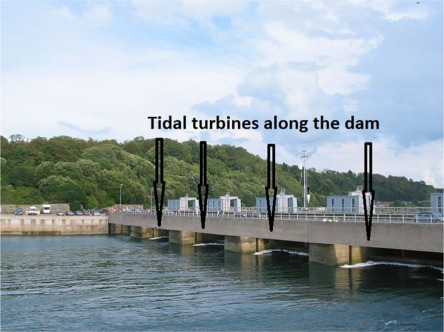
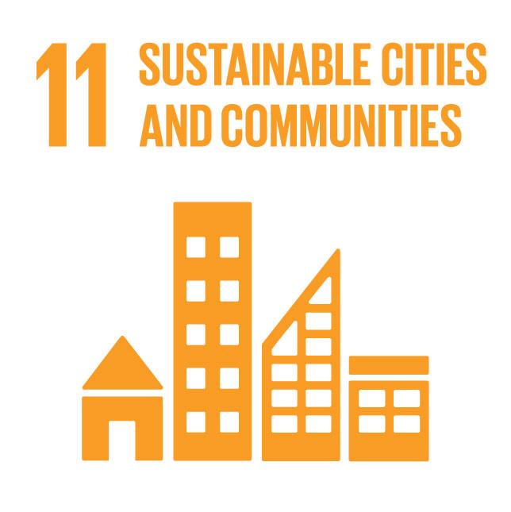
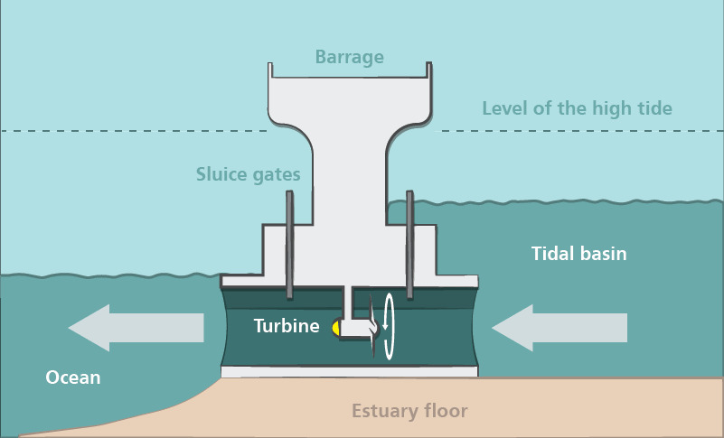

Tidal Energy Plant for Smart City Development in Globalia
Introduction
Globalia, a smart city near Goa covering 1500 square feet, is intended to be a model for sustainable urban development. With a focus on renewable energy and advanced technologies, Globalia aims to integrate green infrastructure and optimize resources to achieve energy efficiency. At the heart of this vision is a tidal energy plant, which utilizes the predictable power of tides to generate electricity. By leveraging algorithms to optimize location selection, energy distribution, and grid management, Globalia ensures sustainable growth and reduced environmental impact.
Why Tidal Energy for Globalia?
Predictability: Unlike solar and wind, tidal cycles are regular and dependable.
Efficiency: The high density of water enables efficient energy generation even with smaller turbines.
Environmental Compatibility: Tidal energy has minimal visual impact and contributes to zero-emission power production.
For Globalia, tidal energy is a logical choice due to its proximity to the coast and the presence of estuaries, making it ideal for implementing tidal barrage technology.

Alignment with Sustainable Development Goals (SDG)

Target 11.6:
Reduce the adverse environmental impact of cities by 2030.
Indicator: Reduction in carbon emissions through tidal energy adoption.
Metric: Energy generated per kilowatt-hour (kWh) with zero emissions.
Target 11.3:
Enhance sustainable urbanization through participatory urban planning.
Indicator: Proportion of cities with integrated energy planning.
Metric: Energy coverage ratio across urban demand centers.
Advantages of Tidal Energy
Reliable Energy Source: Tidal cycles are predictable and unaffected by weather changes.
Sustainability: Zero carbon emissions during operation.
High Energy Density: Water’s density enables significant power generation with smaller infrastructure.
Longevity: Infrastructure has a lifespan of several decades with proper maintenance.
Integration with Smart Grids: Algorithms ensure optimized energy distribution with minimal loss.
Challenges and Solutions
Challenges:
High Initial Costs: Construction and deployment require significant investment.
Environmental Impact: Marine ecosystems may be disrupted during construction and operation.
Operational Maintenance: Challenges like corrosion and biofouling increase maintenance efforts.
Solutions:
Cost Management: Government funding and technological advancements can reduce costs.
Advanced Materials: Corrosion-resistant alloys and coatings reduce maintenance challenges.
Implementation Stage
Tidal Energy Power Plant Types
There are two primary types of tidal energy plants:
Tidal Stream Power: Uses underwater turbines or floating devices to harness tidal currents. These systems work similarly to wind turbines but use the movement of water to generate energy.
Tidal Range Power (Tidal Barrages): Utilizes the difference between high and low tides by constructing dams in estuaries to trap water. When the tide recedes, the water flows through turbines to generate electricity.
Why Tidal Barrages for Globalia?
Globalia’s geographical features, including estuaries with moderate tidal ranges, make tidal barrage technology the most suitable option. This method is efficient for capturing energy even in areas with suboptimal tidal heights, ensuring that Globalia can maximize its renewable energy output.

Phase 1: Location Selection
Using Merge Sort, potential sites are ranked based on tidal range, proximity to Globalia, and cost, with a weighted scoring system.